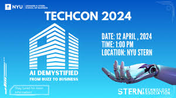
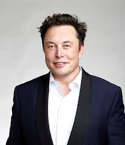

Our History
TechCon began over a decade ago with a simple mission: to bring together
the brightest minds in technology to share knowledge, spark innovation,
and inspire the next generation of leaders. Since its humble beginnings,
TechCon has grown into a global event attended by thousands each year.

Our Mission
At TechCon 2024, our mission is to foster collaboration, celebrate innovation,
and create opportunities for technologists to learn, connect, and grow. We
believe technology should empower humanity and drive positive global change.

Notable Past Speakers
Dr. Ada Lovelace
A pioneer in computer science, Dr. Lovelace shared insights on the role
of women in shaping the future of AI and computational technologies.

Elon Musk
CEO of Tesla and SpaceX, Musk discussed the intersection of technology,
sustainability, and humanity’s future in space exploration.

Grace Hopper
Known as the “Queen of Code,” Hopper highlighted the importance of
programming languages and their role in advancing modern computing.